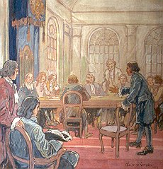

|
|
|
|
|
Louis XIV decided to reign as an absolute monarch. The repercussions were major in New France, where he set up a system of government similar to the one found in the French provinces. People were reassured that the king was setting up in Canada a royal government answering directly to him, rather than to companies interested only in the fur trade and heedless of the settlers' needs. From then on, the companies that had run the colony no longer had any political power. The new system of government no longer served private interests but looked after all the needs of the population, and its powers reached into every sphere of government: administrative, judicial and religious. The people hoped that thanks to these changes a wind of renewal would blow, for bad omens had hung over the colony: the financial collapse of the fur trade after the Iroquois wars, which had destroyed Huronia (near the Great Lakes), an ally of the French. There had also been a strong earthquake, and some people were "possessed by the devil". Before 1663 there was the "Council of Quebec", but it was only advisory. The governor was the final authority. In 1663 the new structure brought a sharing of power. There was now an intendant and a governor, and neither had the final say. The intendant was the minister of justice, police and finance. The governor could decide to make war or give gifts to the Native peoples, but it was the intendant who had the money for that war or those gifts.
Louis XIV encouraged, with letters of nobility, the rise of a small colonial nobility. It would be looked down on in France but would matter here. In 1664 the
"Coutume de Paris" (Custom of Paris) was imposed as civil law,
that is, the body of civil laws that had existed in the Paris region
since the 10th century. These laws set out each person's
personal status, marriage property regimes and the passing on
of property. After the Conquest in 1759, this "Coutume de Paris" system meant that the great French-Canadian fortunes would not last. British-style fortunes, on the other hand, would keep on growing. The "Coutume de Paris", applied in New France where conditions were different, had unexpected consequences. For example, a husband who had to go away for the fur trade, or return to France for a while to see to his affairs, would delegate to his wife by contract the power to manage their assets while he was away. This allowed some women to assert themselves in the colony, and so brought a certain emancipation of women under the French regime. Relatively speaking, French-Canadian society resembled French society: nobles, bourgeois, merchants, traders, professionals, tradesmen, day labourers. Every class of society was found there but, unlike France, there were neither very rich nor very poor. In the 1670s the council became mainly a court of appeal in both civil and criminal cases. It was headed by the governor general, the intendant and the bishop, along with five to seven councillors. A king's attorney general, a clerk and a bailiff completed this court.
The council took a great interest in the regulation of public markets, hygiene, health and safety. Every house, for example, had to have latrines; owners were also required to clean the front of their homes and sweep their chimneys twice a month; it was forbidden to smoke or to throw straw and manure into the streets of the town. Merchants could not sell their goods door to door before displaying them at the market, and the weights and measures they used had to be stamped with the king's mark. Most of these regulations were drawn up by the intendant and approved by the Council.  A person suspected of a crime was arrested and locked up in the royal prisons. Then the councillor in charge of the investigation questioned the accused. He might well resort to torture to obtain a confession or the names of accomplices. The accused was then put through a terrible ordeal in which "brodequins" (boots) were fitted to his legs and tightened hard by the executioner with ropes. There were generally two kinds of question: the ordinary and the extraordinary. The first differed from the second in the number of wooden wedges the torturer drove with a mallet between the leg and the wooden board of the boots, and in the intensity of the suffering. Anyone
found guilty received a punishment that varied with the seriousness of the offence,
from a fine up to the death penalty.
People convicted of theft were often whipped and branded with
a red-hot fleur-de-lys on the right shoulder. That way they could
be identified as Many crimes were punishable by death in New France: murder, duelling, counterfeiting, burglary, theft by night, theft by a servant, rape and arson. Executions were always public, to impress the population and frighten anyone tempted to break the law. Generally the condemned man was hanged, then burned or displayed at a crossroads. It was, however, very hard to find anyone willing to carry out all these corporal and afflictive punishments. Although he was housed at the expense of the Sovereign Council and well paid, the executioner did not have an enviable job. He had to be recruited from the prisons, among those condemned to death, who were given the choice between becoming executioner or being hanged. Except for Jean Rattier, who held the post for 23 years, careers were rather short. In 1732 the State even had to buy a Black slave to serve as executioner in Quebec until 1743.
|

 Louis XIV
divided in order to rule. There would often be conflict between the
successive intendants and governors. The Sovereign Council was
a nest of squabbles and rivalries between people passing through from
France to boost their careers with a few years in the colony and
people born here. There were quarrels over precedence among
governor, intendant and bishop. Each wrote to the king to
denounce the other... These quarrels
seem senseless to us today, and yet they are very typical
of a strongly hierarchical society in which honour and prestige
were paramount values.
Louis XIV
divided in order to rule. There would often be conflict between the
successive intendants and governors. The Sovereign Council was
a nest of squabbles and rivalries between people passing through from
France to boost their careers with a few years in the colony and
people born here. There were quarrels over precedence among
governor, intendant and bishop. Each wrote to the king to
denounce the other... These quarrels
seem senseless to us today, and yet they are very typical
of a strongly hierarchical society in which honour and prestige
were paramount values. criminals for the rest of their days.
They could also be sent to the galleys or banished from a
town or from the colony. Others were simply humiliated in front of
everyone, exposed in the public square with a placard on their front and
back, as was the case for Jacques-Phillippe Dalphin, accused of
theft at the Forges du Saint-Maurice in October 1752 and put in the pillory
in the market square of Trois-Rivières with a placard that
read: "Thief of axes belonging to the King".
criminals for the rest of their days.
They could also be sent to the galleys or banished from a
town or from the colony. Others were simply humiliated in front of
everyone, exposed in the public square with a placard on their front and
back, as was the case for Jacques-Phillippe Dalphin, accused of
theft at the Forges du Saint-Maurice in October 1752 and put in the pillory
in the market square of Trois-Rivières with a placard that
read: "Thief of axes belonging to the King".